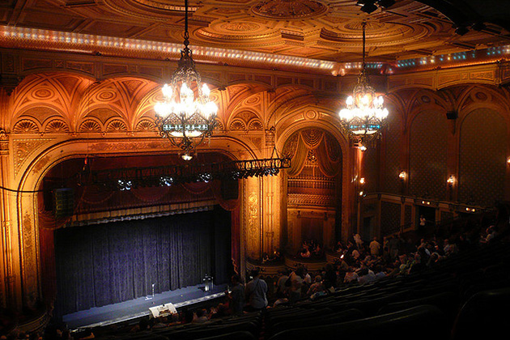

The Prestige
Main Content

If Christopher Nolan’s film of Christopher Priest’s novel just misses the inexorable logic of Bryan Singer’s The Usual Suspects and his own Memento, it still repays multiple viewings and the internet is bound to be full of theories and counter-theories.
Set in Victorian England (according to production notes – yet there’s a reference to ‘the King’ in the prison scene, which makes it Edwardian), the film makes brilliantly inventive use of real locations in, of all places, Los Angeles.
Beneath the elaborate dressing (Nathan Crowley's Production Design was deservedly Oscar-nominated), exterior street scenes are the familiar Universal Studios backlot.
Four downtown Los Angeles theatres stood in for London’s West End: the Los Angeles Theatre, the Tower Theatre, the Palace and the Belasco.
The most dazzling is the Los Angeles Theatre, 615 South Broadway, used for the opening ‘Transported Man’ trick. Beautifully restored, its opulence has made it a cinema veteran.
It became ‘Carnegie Hall’ for Milos Forman’s shockingly underrated Man on the Moon, with Jim Carrey as subversive comic Andy Kaufman, and hosts the sad premiere of George Valentin’s silent film in The Artist. It’s the theatre’s lavish red and gilt lobby which is most often seen on screen. This was the site of the premiere of Limelight in Richard Attenborough’s biopic Chaplin, Cameron Diaz’s dance fantasy in Charlie’s Angels, Gotham’s casino in Joel Schumacher’s Batman Forever, a somewhat raunchier casino in Michael Bay’s Armageddon and even as the Vatican in End of Days.
Another lavish venue is the Downtown Palace, 630 South Broadway, the loft of which became the workshop of Alfred Borden (Christian Bale). Formerly the Palace Theatre, the same loft was previously seen as the studio of performance artist Maude Lebowski (Julianne Moore) in Joel Coen’s The Big Lebowski.
The Tower Theatre, 802 South Broadway, which is actually a cinema, is a more modest venue. Its exterior is seen as the ‘Pantages’ (although set in London, the film mysteriously uses the names of famous Los Angeles theatres – Pantages, Orpheum – though those two real theatres weren’t used for filming. The Tower was also featured in The Replacement Killers, while Megatron perches on its tower in Michael Bay’s Transformers.
The deserted theatre in which Angier (Hugh Jackman) demonstrates the ‘Real Transported Man’ trick to an amazed Ackerman is the Belasco Theatre, 1050 South Hill Street. You might have seen the Belasco as the ‘Kyoto’ dance hall in Rob Marshall’s Memoirs of a Geisha and the hideout of John Travolta in Dominic Sena’s Swordfish (with Jackman again)
You won’t be able to enjoy a meal at the restaurant, which is the interior of the old Herald Examiner Building, 1111 South Broadway, downtown. Looks similar to the ‘New York’ restaurant in which Gabriel Byrne is picked up at the opening of The Usual Suspects. It is. Much of Bryan Singer’s film was shot in this abandoned newspaper office.
The entrance to London’s ‘Royal Albert Hall’ is the imposing lobby of the Park Plaza Hotel, 670 South Park View Street, overlooking MacArthur Park. Remember Leslie Nielsen deluged by terrorists and runaway prams in Naked Gun 33 1/3 on these steps? Or Nicolas Cage bashing out someone’s brains in the opening scene of David Lynch’s Wild At Heart? The abortive demonstration of Nikola Tesla’s scary machine is in the hotel’s grand Terrace Room (which was the ‘Coco Bongo Club’ in Jim Carrey comedy The Mask).
The Park Plaza pops up again. Its wood-panelled Ballroom is the ‘Colorado’ hotel in which Angier finds Tesla’s machine. For more on the Park Plaza’s Ballroom, see Steven Spielberg's Hook.
The old bank building at 650 South Spring Street, downtown Los Angeles, also crops up twice. It’s not only the courtroom in which Borden is tried for murder, but the pub in which Cutter (Michael Caine) and Alley (Andy Serkis) meet up. The same interior can be seen in David Fincher's Se7en, Ghost, The Mask, John Schlesinger's Marathon Man and Spider-man 2 among other appearances.
The mansion of Robert Angier is the Greystone Mansion, 905 Loma Vista Drive, Beverly Hills. Another veteran location with a long cinematic history, the house and grounds have been seen in plenty of other films including Spider-Man, Ghostbusters, Star Trek Into Darkness, The April Fools, The Loved One, The Big Lebowski and There Will Be Blood among many others. The mansion is not open to the public, but you can visit the extensive grounds – free of charge .And another David Lynch connection. Greystone used to house the American Film Institute, where interiors for Eraserhead were filmed.
Visit Info
Visit The Film Locations
California | Los Angeles
Visit: Los Angeles
Flights: Los Angeles International Airport (LAX), 1 World Way, Los Angeles, CA 90045 (tel: 424.646.5252)
Travelling around: Los Angeles Metro
Visit: the Los Angeles Theatre, 615 South Broadway, Los Angeles, CA 90014 (tel: 213.629.2939)
Visit: the Downtown Palace, 630 South Broadway, Los Angeles, CA 90014 (tel: 213.553.4567)
Visit: the Tower Theatre, 802 South Broadway, Los Angeles, CA 90014 (tel: 213.629.2939)
Visit: the Belasco Theatre, 1050 South Hill Street, Los Angeles, CA 90015 (tel: 213.746.5670)
Visit: Greystone Park & Mansion, 905 Loma Vista Drive, Beverly Hills, CA 90210 (tel: 310.285.6830)